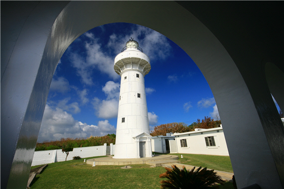
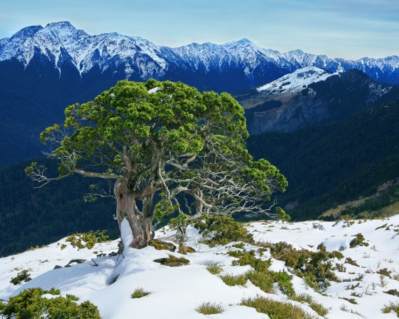
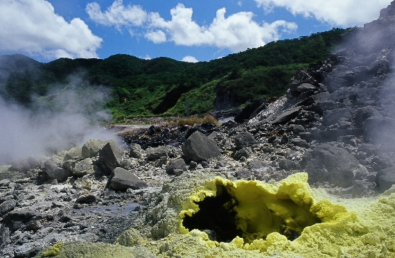

墾丁國家公園位於恆春半島南部，同時涵蓋陸域與海域面積共33,289.595公頃，成立於1984年1月，是我國第一座國家公園。其位置三面臨海，東面太平洋，南瀕巴士海峽，西鄰臺灣海峽，北接恆春縱谷平原、三台山、滿州市街，港口溪、九棚溪等。南北長約24公里，東西寬約24公里。

墾丁國家公園最具特色的海岸線，一向是國人最愛的旅遊聖地，由於百萬年來地殼運動使陸地與海洋深入交融，造就本區奇特的地理景觀，海面下的世界更是絢麗繽紛，種類繁多的魚種、多采多姿的珊瑚更是代表特色。生態方面，熱帶氣候蘊育出富有生命力的熱帶、海濱植物，每年秋冬眾多的過境候鳥，也讓這裡成為著名賞鳥聖地。此外，此區發現多處史前遺跡與原住民文化遺址，更是本區無價的人文資產。
玉山國家公園面積居於臺灣中央，面積103,121公頃，園內高山崢嶸，以東北亞最高峰、海拔3,952公尺的玉山為首，共涵蓋全臺3分之1的名山峻嶺，連綿不絕的山頭怎麼望也望不完，真不愧是臺灣的屋脊。

此區不只有高山，還包含古老的地層結構及斷崖、峭壁、峽谷等雄奇的地形，在降雨豐沛、森林繁盛的條件下，成為臺灣三大水系的搖籃。此外玉山國家公園的生態，受高山深谷的極端地勢影響，造成垂直各異的植群帶與動物棲息，亞熱帶到亞寒帶景觀一應具全，走一趟這個區域就像走進縮小版的原始臺灣。
另外，此區還有著一級古蹟—八通關古道，此道是清政府對臺灣經營，由消極抵制轉為積極開發的重要里程碑，而日治時期開闢的2條警備道，則為日人在臺理蕃政策下的產物，訴說著布農奮勇抗日18年的英雄史蹟。
contents333333
